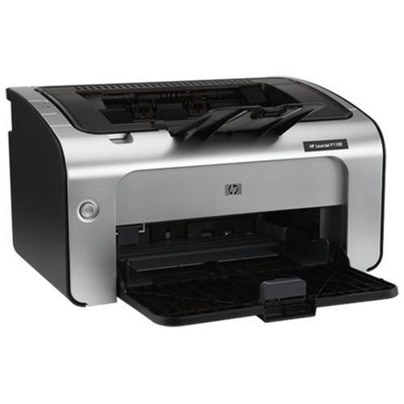

Cateogries

TV

Identifying exactly which Appliance you own can sometimes be a challenge, depending on the manufacturer. Usually the manufacturer name is listed on the front, while the exact model number may be found on the back.
Digital computers have existed in various forms since the early 1940s. One of the most prominent computers of the time, the ENIAC, used vacuum tubes and was considered to be the first general purpose electronic computer. However, computer manufacturers in the early 1960s started using transistors. The development of integrated circuits (ICs) made computers steadily increase in computing power, all the while bringing down costs of manufacture and power consumption.
By the 1980s the first personal computers came on the market, giving the casual user unparalleled computing abilities at home.
Why do we blame nation’s power system without even checking the poor wiring inside our home? It may be out-dated and won’t be efficient in supplying electricity to the appliances, electronics and lighting.
The problem is that the circuits fitted during older days were not designed to power different types of electronic equipment or lighting of this era.
There may be obvious signs of strains with more extension cords and single outlet paving the way to sprout power strips or lurking not seen at the back of ceilings, walls and cover plates.
So when considering household electric appliances, your safety is the main goal. If you are facing high bills, flickering lights and damaged appliances at your home, you can make sure the home circuit is not in a proper working condition.
Door Step TV Repair Center in Delhi Noida, Ghaziabad. We provide LED TV and LCD TV Repair Service in Delhi Noida and Ghaziabad. We are well known for TV Repair and TV Service in all the major areas of Delhi Noida for Repairing your Television of any brand TV Repair and TV Service. Our team of experts provides excellent Television repair services to all the Televisions of your chosen brands, so that you can enjoy your favorite movies and shows in no time. Our TV Repair center is your one stop service center for your entire consumer branded Television repair needs. Select from our wide range of high quality and pocket friendly maintenance deals for most convenient and budgetable TV repair services. Our professional experts forte in serving issues like vertical lines display issue, backlight services, and many more is acknowledgeable when it comes to servicing any LED TV and LCD TV of your choice.
When an office printer doesn’t perform its one job, it’s easy to feel frustrated. And if that faulty device is a multifunction printer (MFP) that also acts as your scanner and copier, you lose precious business time and productivity will suffer.
It's enough to make you want to throw your hands up in surrender (or throw your printer against the wall). Many issues, however, can be solved with a little DIY printer know-how.
To help you get back up and running with as little downtime as possible, we compiled a list of the following 10 common printer problems and how to fix them.
Before we get too deep into specific common printer problems and solutions, consider the best practices that our Managed Print technicians follow first. Always make sure the basics have been checked before trying to solve common problems with printers:
Are you getting error messages on the control panel or simply feel like your print job is stuck somewhere in cyberspace? While the easiest solution is to hit the power button and restart your printer, it's essential to double-check you've selected the correct print settings—preferably before you send a dozen copies of your document to another device located in the next room.
It may seem insignificant, but the paper you print on can make a major difference in your final print quality. Generally, photo paper sold by your printer’s manufacturer will have fewer issues than generic printer paper. But what’s even more important? Match the printer settings to what you’re printing.
Most printer manufacturers come with security features already installed to protect against unauthorized access. However, if certain measures aren’t taken, a hacker could use your printer as a back door to breach your network. The biggest steps you can take to prevent this include changing the default password on your printer and ensuring the latest security updates have been installed.
Book ServiceA new report finds that errors with the Xbox One and unprovoked PlayStation 4 shutdowns top of the list of the most common hardware problems currently facing video gamers. The report, crafted by troubleshooting site Fixya, is based on over 40,000 video game problems submitted by owners of the newest consoles, the Xbox One, Playstation 4 and Wii U. Here are the top 4 most commonly reported problems for each console.
The biggest problem area for Microsoft's Xbox One (aside from the $499 price tag) is the included Kinect motion sensor, which represents 30% of the trouble reports reviewed. Specifically, a number of people are having difficulty in having the device recognize voice and motion commands, which can effect menu navigation and, in many cases, gameplay. Shutdowns and audio problems occur as well, but are less common.
The Sony PlayStation 4 may be topping the sales charts, but it’s not due to a lack of problems. The biggest problem in terms of frequency (and likely severity) is unprompted console shutdowns, representing 35% of trouble reports. Especially unfortunate users see these shutdowns take the form of the dreaded “blue light of death” – a worrying sign that you need a new PS4. Problems with audio, freezing, and the disc drive are also issues for owners.
Not many of you have purchased a Nintendo Wii U, but I predict that may soon be about to change: Nintendo is mere weeks away from releasing the long-awaited Mario Kart 8, and Super Smash Brothers 4 is on its way later in the year. Just watch out for game freezes – the annoying problem represents 35% of Wii U trouble reports and can (rarely) brick your device. Numerous people are having problems with the tablet-like Wii U controller, as well.
Book Service**Please Specify your Product type for Repairing
Book ServiceWe want opinions from our Customers about how can we strengthen/ improve our services through this online platform. Also, Our customers can suggest us UI designs, BUGS and accessebility issues, we will update them.
© 2022 Siddharth Shravan Jha